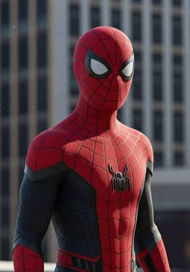

Curiosity
I like discovering how things work and asking questions.
A personal space built around who I am, what I enjoy, what I have learned, and where I want to go next.
I am someone who likes to understand things rather than simply accept them. I enjoy learning, experimenting and turning ideas into something real.
I am naturally curious and I like discovering how technology, games, websites and different systems work. When something interests me, I can spend a lot of time trying to understand every part of it.
I also believe that improvement comes from experience. Mistakes are not the end of something — they are information that can help me make the next attempt better.
Learn it.
Understand it.
Improve it.
Build it.
I like discovering how things work and asking questions.
When something matters to me, I keep working until I improve.
I enjoy creating ideas, designs and projects of my own.
I understand that good results require effort and consistency.
I can change my approach when something is not working.
I like taking initiative and helping turn ideas into action.
Games and technology made me interested in computers and everything happening behind the screen.
Instead of only using technology, I became interested in creating websites, projects and experiments myself.
Leader in Me helped me think more about responsibility, teamwork, priorities and taking ownership.
There is still a lot to learn. My goal is to keep improving instead of staying comfortable with what I already know.
The 8 Habits give me a framework for becoming more responsible, purposeful and effective.
Take responsibility for my choices and actions.
Know what I want to achieve before I start.
Prioritize what is important instead of wasting time.
Look for solutions where everyone can benefit.
Listen and understand before expecting to be understood.
Use teamwork and different strengths to achieve better results.
Keep improving myself and maintaining balance.
Develop my strengths and use them to positively influence others.
Computers, software, websites and discovering what technology can actually do.
Minecraft and other games are not only entertainment for me; they also inspire creativity and experimentation.
Performance, design and the feeling of being behind the wheel are things I genuinely enjoy.
Among all characters, Spider-Man is my favourite. The character's personality, responsibility and determination stand out to me.
A few moments that are part of my story. Click any photo to view it larger.
My favourite character among all characters.
What makes Spider-Man special to me is that behind the powers there is still a person who has responsibilities, problems, mistakes and choices to make.
I like the combination of courage, intelligence, humour and responsibility. Spider-Man keeps moving forward even when things become difficult.
Power means more when it comes with responsibility.

The setup where I spend time gaming, learning, experimenting and building things.
A website designed to represent my identity, interests, achievements, projects and future direction.
A digital project focused on leadership, habits, personal growth and reflection.
Different HTML, CSS and JavaScript experiments that help me understand how websites are designed and developed.
Continue developing my knowledge instead of stopping when something becomes difficult.
Create projects that are more useful, creative and professional every time.
Become someone who can take responsibility and positively influence a team.
Keep exploring technology and opportunities that can turn ideas into something meaningful.
If I were introducing myself to a new friend, these are some of the qualities I would want them to notice.
I genuinely like learning how things work.
I don't want to stay at the same level when I know I can get better.
If I get an idea that interests me, I like turning it into something real.
I like having my own interests, opinions and direction.
I like forming my own understanding instead of blindly following what everyone else says.
Small things matter to me, especially when I'm building or designing something.
Trying different approaches helps me discover what actually works for me.
I would rather keep learning and improving than remain completely comfortable.
Cars are another part of what I enjoy — especially performance, design and the experience around them.
This portfolio shows where I am right now. The more important part is where I decide to go next.
MALIK ABDUL MOIZ
PORTFOLIO / 2026